Storyboard · Le voyage de Moussa
Le voyage de Moussa
Chaque plan du module, branches interactives comprises : images tirées de l’animation, direction visuelle, narration, textes à l’écran et interactions. Livrable 1, à valider avec les experts de l’ARAA.
Carte des embranchements
| Plan | Segment | Images | Direction visuelle (anglais) | Narration et sous-titres | Textes à l’écran |
|---|---|---|---|---|---|
| 1 | title 7s Version linéaire (WhatsApp) |
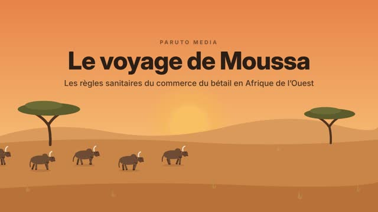 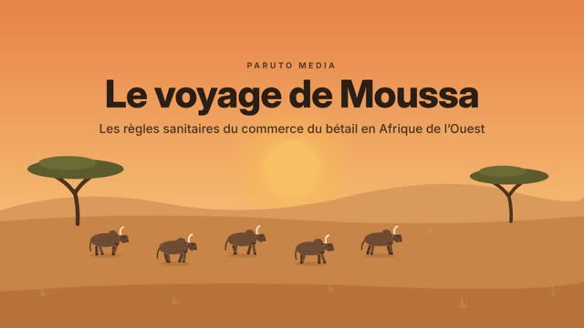 |
Dawn over the Sahel: sky gradient from #E7834A at the top to #F9D59C at the horizon, a large soft sun rising slowly, two flat acacia trees in dark olive silhouette, and five small dark-brown zebu cattle walking left to right along the horizon in a slow loop. From 0.8 s the title fades and slides up into the upper third: a small letter-spaced kicker "PARUTO MEDIA", the title "Moussa’s Journey" (very large, extra bold, #2B1E16) and the subtitle "Animal health rules for the livestock trade in West Africa" beneath it. | 0:01.2 Le voyage de Moussa : les règles sanitaires du commerce du bétail. | — |
| 2 | meet 9.5s Version linéaire (WhatsApp) |
 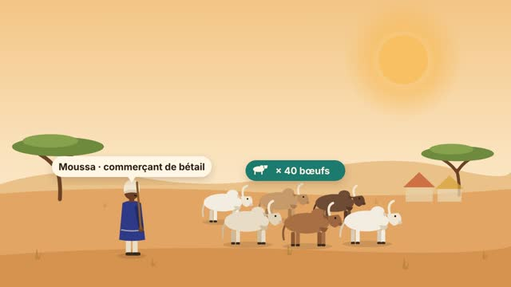 |
Daytime savanna: warm sky (#F2C584 to #FCEFD8), soft sand hills (#E9C189), ochre ground (#E2A564) with darker foreground (#D6934F), two green acacias and two small market stalls far right. Moussa walks in from the left and stops left of centre: a West African livestock trader in a long indigo boubou (#2E3A87), cream turban and a wooden staff. Six zebu cattle (white, tan and dark brown, with humps and lyre-shaped horns) walk in from the left in two rows and settle in the centre. At 3.6 s a cream speech-bubble name tag pops above Moussa: "Moussa · livestock trader". At 5.6 s a teal pill badge with a small cattle icon pops above the herd: "× 40 cattle". | 0:07.4 Voici Moussa, commerçant de bétail au Sahel. 0:11.5 Il veut vendre 40 bœufs sur un grand marché, de l’autre côté de la frontière. |
— |
| 3 | diseases 9s Version linéaire (WhatsApp) |
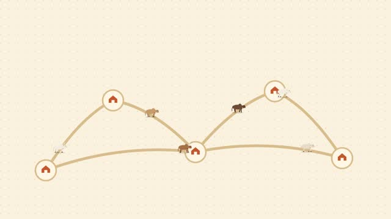 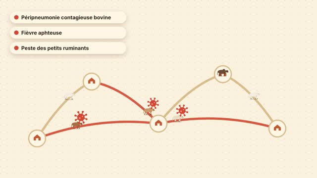 |
Abstract map board, not a real map: cream background (#FBF1DF) with a fine dot pattern. Five round town markers (cream circles with a small terracotta house icon) pop in, linked by six curved sand-coloured routes that draw on one after another. Tiny cattle walk along the routes continuously. From 3 s, red spiky virus icons appear riding with three of the animals and pulse; the routes those animals travel turn red as they go. From 4.6 s three cream pill labels with a red dot slide in at top left, one by one: "Contagious bovine pleuropneumonia", "Foot-and-mouth disease", "Peste des petits ruminants". No country borders, names or flags. | 0:16.8 Les animaux voyagent d’un pays à l’autre… et les maladies voyagent avec eux. 0:20.9 Une seule bête malade peut contaminer d’autres troupeaux tout au long de la route. |
— |
| 4 | why 22s Version linéaire (WhatsApp) |
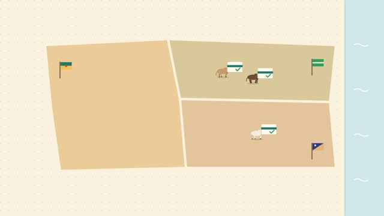 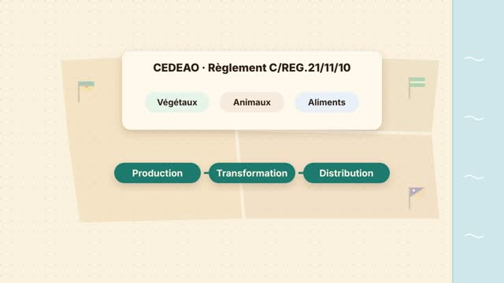 |
An invented map on a cream board (#FBF1DF) with a fine dot pattern, not a real map: three neighbouring countries drawn as soft angular shapes in sand tones separated by thick cream borders (a large one on the left, two on the right, one above the other), a pale-blue strip of sea with small white waves along the right edge, and a small plain two-colour flag on each country (invented, not any real flag). No country names. From 0.6 s, 1.4 s and 2.2 s three small cattle, each followed by a small cream crate, travel back and forth in arcs between the three countries. From 7.0 s the map dims and at 7.4 s a cream card pops in the upper middle with the title "ECOWAS · Regulation C/REG.21/11/10" and three pastel pills: "Plants", "Animals", "Food". From 14.8 s three teal pills pop in a row across the middle, joined by two teal arrows: "Production", "Processing", "Distribution". At 17.8 s a pale-red pill pops below them: "Human health ↔ animal health". | 0:25.8 Chaque jour, des animaux et des produits animaux traversent les frontières de l’Afrique de l’Ouest. 0:32.9 En 2010, la CEDEAO a adopté un règlement qui harmonise les règles sanitaires des végétaux, des animaux et des aliments. 0:40.1 Il s’applique de la production à la distribution, car la santé humaine dépend de la santé animale. |
— |
| 5 | principles 26s Version linéaire (WhatsApp) |
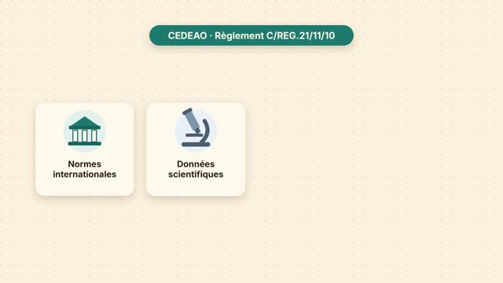 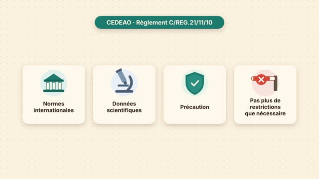 |
Cream board (#FBF1DF) with a fine dot pattern, no logos. At 0.3 s a teal pill pops at the top: "ECOWAS · Regulation C/REG.21/11/10". Four cream cards (rounded corners, soft shadow, a pastel circle at the top holding an icon, a bold label under it) pop in a row at 0.6 s, 7.4 s, 13.8 s and 20.2 s: a small teal temple "International standards"; a microscope "Scientific data"; a green shield "Precaution"; a barrier crossed out "No more restriction than needed". | 0:47.8 Le règlement fixe des principes communs. D’abord, les mesures se fondent sur les normes internationales. 0:54.7 Les risques sont évalués sur des données scientifiques, et les mesures restent proportionnées au risque. 1:01.1 L’absence de certitude scientifique absolue n’est pas un prétexte pour retarder l’action. 1:07.5 Mais une mesure provisoire ne doit pas restreindre le commerce plus que nécessaire. |
— |
| 6 | freeMove 22s Version linéaire (WhatsApp) |
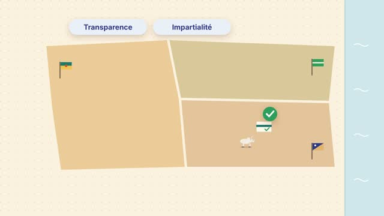 |
An invented map on a cream board (#FBF1DF) with a fine dot pattern, not a real map: three neighbouring countries drawn as soft angular shapes in sand tones separated by thick cream borders (a large one on the left, two on the right, one above the other), a pale-blue strip of sea with small white waves along the right edge, and a small plain two-colour flag on each country (invented, not any real flag). No country names. At 1.2 s a green pill "Free movement" pops at the top. From 0.8 s a cream crate and a cow travel from the left country to the lower right one without stopping; at 6.0 s a green check pops above them. At 7.8 s a cream card pops in the middle with the left country's flag, a big equals sign and the lower right country's flag, with a pill "Mutual recognition" below it. At 14 s both fade, and from 14.6 s three pale-blue pills pop along the top one by one (1.6 s apart): "Transparency", "Impartiality", "Proportionality". | 1:13.8 Les animaux et produits conformes aux normes communautaires circulent librement dans l’espace CEDEAO. 1:21.1 Chaque pays accepte ceux qui sont conformes aux normes d’un autre État membre. 1:27.9 Et toute personne contrôlée a droit à la transparence, à l’impartialité et à la proportionnalité. |
— |
| 7 | actors 28s Version linéaire (WhatsApp) |
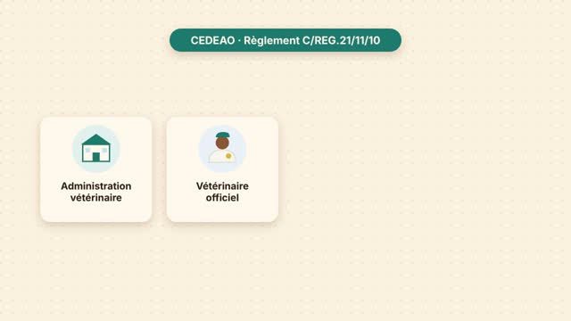 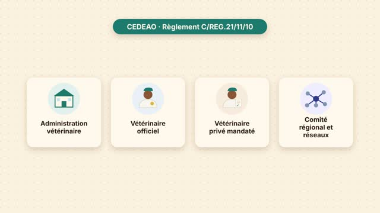 |
Cream board (#FBF1DF) with a fine dot pattern, no logos. At 0.3 s a teal pill pops at the top: "ECOWAS · Regulation C/REG.21/11/10". Four cream cards (rounded corners, soft shadow, a pastel circle at the top holding an icon, a bold label under it) pop in a row at 0.6 s, 7.6 s, 14.8 s and 21.4 s: a small teal-roofed office building "Veterinary administration"; a veterinarian bust (white coat, teal cap) with a gold badge "Official veterinarian"; a veterinarian bust with a small document "Mandated private vet"; an indigo network of linked dots "Regional committee and networks". | 1:35.8 Qui fait quoi ? Chaque pays a une administration vétérinaire, qui désigne l’autorité chargée des certificats vétérinaires. 1:42.9 Les vétérinaires officiels assurent les contrôles sanitaires et la certification des animaux. 1:50.1 Des vétérinaires privés peuvent recevoir un mandat sanitaire : prophylaxie, surveillance, inspection. 1:56.7 Au niveau régional, un comité et des réseaux d’experts, de laboratoires et d’alerte relient les pays. |
— |
| 8 | choice1 9.3s (pause) Version linéaire (WhatsApp) |
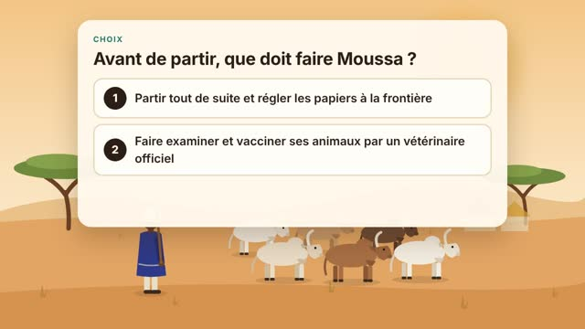 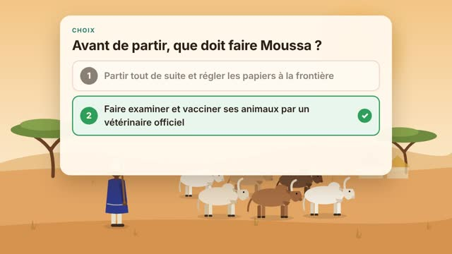 |
The savanna from the previous scene, herd and Moussa idle (the name tag and badge are gone). A large cream card (rounded corners, soft shadow) slides down into the upper half. Small teal uppercase label "Choice", the question in large bold text, then two option rows with numbered dark circles: 1 and 2 (texts below). From 1.4 s to 4.4 s show the line "Pause the video and choose: 1 or 2?" with a 3, 2, 1 countdown in an orange ring. At 4.6 s option 2 turns green with a white check mark in a green circle; option 1 dims to half opacity. | 2:03.8 Avant de partir, que doit faire Moussa ? 2:08.3 Réponse 2 : le contrôle sanitaire commence avant le départ. |
Avant de partir, que doit faire Moussa ? 1. Partir tout de suite et régler les papiers à la frontière 2. Faire examiner et vacciner ses animaux par un vétérinaire officiel Interaction 1 → mauvaise réponse, blocked1 2 → bonne réponse, vet |
| 9 | blocked1 9.4s Version interactive seulement |
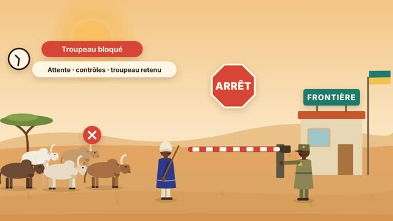 |
Branche : conséquence d’un mauvais choix, puis retour au choix. | +0.3s Sans certificat vétérinaire, le troupeau est arrêté à la frontière. +4.2s Contrôles, attente, troupeau retenu : Moussa perd du temps et de l’argent. |
— Interaction Branche : conséquence d’un mauvais choix, puis retour au choix. |
| 10 | vet 16.6s Version linéaire (WhatsApp) |
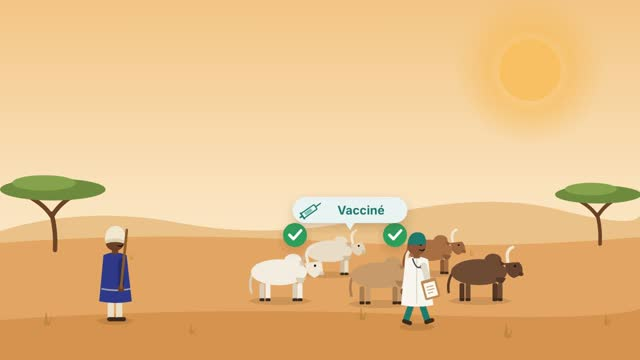 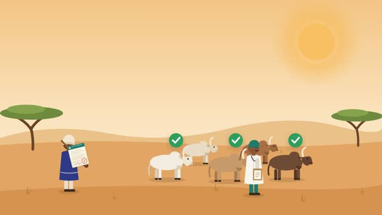 |
Same savanna, five cattle standing still, Moussa on the left. The official veterinarian walks in from the left: white coat, teal cap, teal trousers, stethoscope, clipboard. He stops in front of each front cow in turn (about 2.0 s, 3.6 s, 5.2 s), arm raised as if examining, and a green circle with a white check pops above each cow (2.4 s, 4.0 s, 5.6 s). At 3.0 s a pale-teal pill with a syringe icon pops: "Vaccinated". At 6.0 s a certificate card bounces in at upper right: cream paper, teal header reading "VETERINARY CERTIFICATE", grey text lines drawing on one by one, three small dots and "× 40", then at 7.3 s a red round stamp with a check slams on (scale from big to normal, tilted), and at 7.7 s a blue handwritten signature draws on. At 10.4 s the certificate shrinks and flies into Moussa's hand. | 2:13.1 Moussa appelle le vétérinaire officiel, qui examine et vaccine chaque animal. 2:18.4 Les animaux sont sains : le vétérinaire officiel délivre le certificat vétérinaire. 2:24.2 Il accompagne le troupeau et se présente aux postes de contrôle. |
— |
| 11 | borderArrive 6s Version linéaire (WhatsApp) |
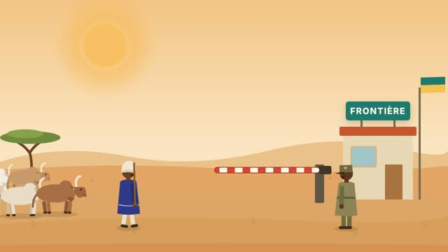 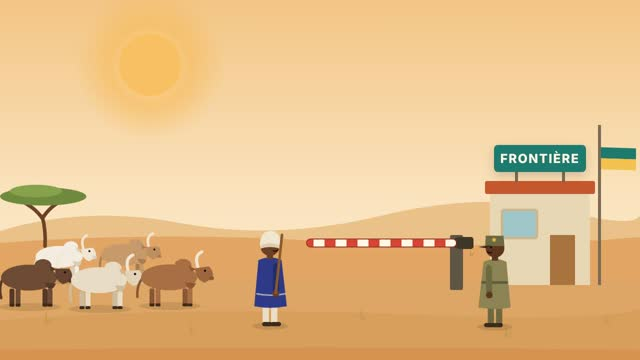 |
A border post on a dusty road: on the right a small cream building with a terracotta roof and a window, a teal sign on the roof reading "BORDER", a flagpole with a plain teal-and-yellow flag (not any real country's flag), and a red-and-white striped barrier arm lowered across the road from a dark post. A veterinary border officer in a khaki uniform and peaked cap stands to the right of the barrier, facing left. Moussa and the herd walk in from the left and stop in front of the barrier. | 2:29.7 À la frontière, un agent des services vétérinaires contrôle les documents et les animaux. | — |
| 12 | choice2 8s (pause) Version interactive seulement |
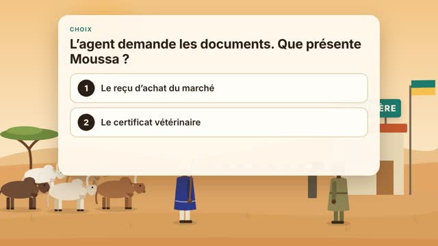 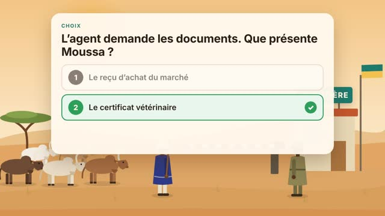 |
Carte de choix sur la scène figée ; la vidéo attend la réponse du spectateur. | +0.3s L’agent demande les documents. Que présente Moussa ? | L’agent demande les documents. Que présente Moussa ? 1. Le reçu d’achat du marché 2. Le certificat vétérinaire Interaction 1 → mauvaise réponse, blocked2 2 → bonne réponse, borderCross |
| 13 | blocked2 7.5s Version interactive seulement |
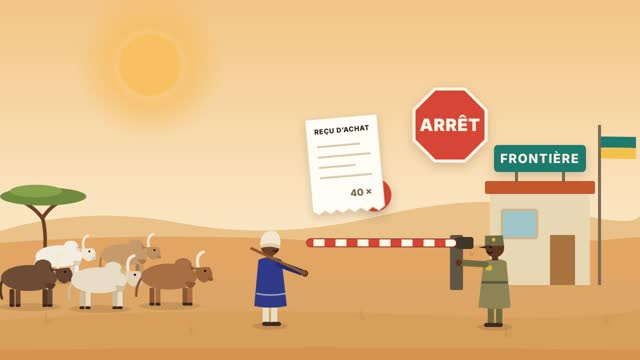 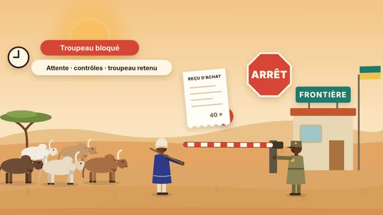 |
Branche : conséquence d’un mauvais choix, puis retour au choix. | +0.3s Un reçu d’achat ne prouve pas que les animaux sont en bonne santé. +3.9s Sans certificat, le troupeau ne passe pas. |
— Interaction Branche : conséquence d’un mauvais choix, puis retour au choix. |
| 14 | borderCross 12.2s Version linéaire (WhatsApp) |
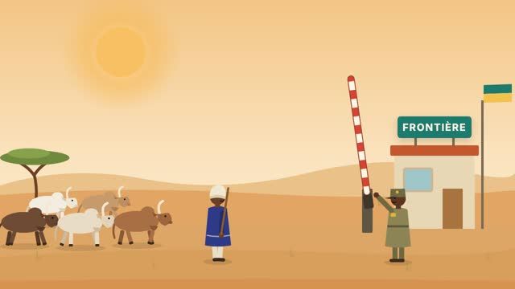 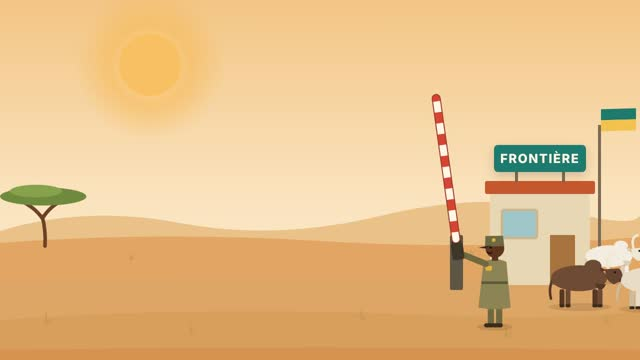 |
Continuing the border scene. At 0.1 s the certificate (same design, now with the red stamp and signature) pops up between Moussa and the officer; Moussa holds his arm out to hand it over. From 0.7 s to 1.9 s a magnifying glass sweeps across it. At 2.0 s a green rectangular stamp "VALID" slams onto the certificate, then the certificate fades. From 2.6 s to 3.6 s the barrier arm swings up. From 3.4 s Moussa and the herd walk through and out of frame to the right while the officer waves. | 2:35.6 Le certificat est valable et les animaux sont en bonne santé : la barrière se lève. 2:41.2 Les règles harmonisées de la CEDEAO donnent un cadre commun aux contrôles sanitaires dans toute la région. |
— |
| 15 | borderRules 20s Version linéaire (WhatsApp) |
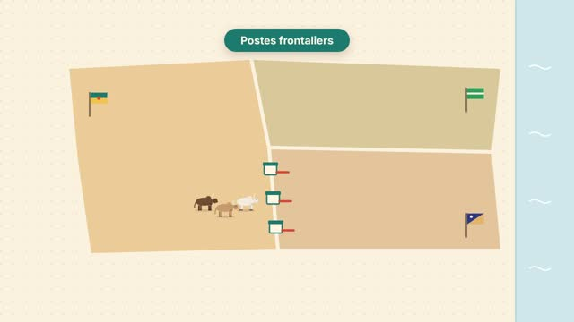 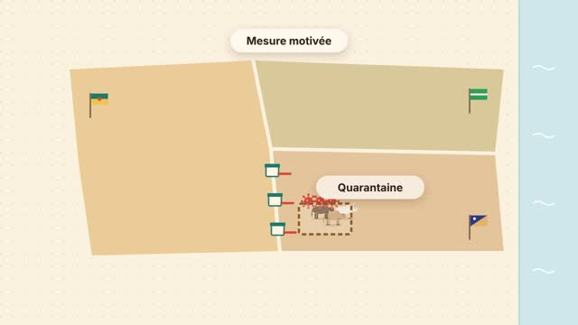 |
An invented map on a cream board (#FBF1DF) with a fine dot pattern, not a real map: three neighbouring countries drawn as soft angular shapes in sand tones separated by thick cream borders (a large one on the left, two on the right, one above the other), a pale-blue strip of sea with small white waves along the right edge, and a small plain two-colour flag on each country (invented, not any real flag). No country names. From 0.6 s three small border posts (cream huts with teal roofs and red barrier arms) appear along the border between the left country and the lower right one, and a teal pill "Border posts" pops at the top. From 1.6 s three cattle walk from the left to the middle post. At 7.0 s red spiky virus icons pop above them and the top pill changes to a red pill "Notifiable disease"; at 7.8 s a red X pops at the post. At 8.8 s a dashed brown pen appears just inside the lower right country and from 9.0 s the cattle walk into it; at 10.4 s a pill "Quarantine" pops beside it. From 13.8 s an envelope flies from the pen back to the left country, and at 14.8 s a pill "Reasons given" pops at the top. | 2:47.9 Chaque pays fixe la liste des postes frontaliers par lesquels les animaux peuvent entrer. 2:54.4 Si des animaux sont atteints d’une maladie à déclaration obligatoire, il peut refuser leur entrée ou les mettre en quarantaine. 3:01.0 Ces mesures sont communiquées immédiatement, avec leurs motifs. |
— |
| 16 | transhumance 22s Version linéaire (WhatsApp) |
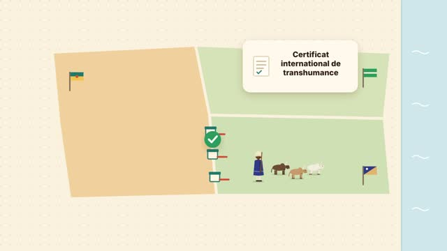 |
An invented map on a cream board (#FBF1DF) with a fine dot pattern, not a real map: three neighbouring countries drawn as soft angular shapes in sand tones separated by thick cream borders (a large one on the left, two on the right, one above the other), a pale-blue strip of sea with small white waves along the right edge, and a small plain two-colour flag on each country (invented, not any real flag). No country names. The countries are tinted for the seasons: the left one dry gold, the two on the right fresh green. The three border posts are shown. From 0.8 s Moussa (small, indigo boubou, staff) walks three cattle in a long arc from the top of the left country down into the lower right country, past the middle post (a green check pops at the post at 9.6 s). Pills: "Dry season" at the upper left from 0.8 s to 7 s, then "Rainy season" on the right from 7 s to 14 s. At 14.8 s a cream card with a document icon pops at the upper right: "International transhumance certificate". | 3:07.9 La transhumance déplace les troupeaux au fil des saisons. C’est un mode d’élevage utile, mais aussi une source de problèmes sanitaires. 3:15.0 Les États membres facilitent la circulation des troupeaux transhumants d’un pays à l’autre, 3:22.2 avec le certificat international de transhumance de la CEDEAO. |
— |
| 17 | alert 18s Version linéaire (WhatsApp) |
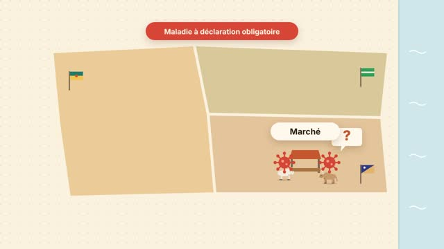 |
An invented map on a cream board (#FBF1DF) with a fine dot pattern, not a real map: three neighbouring countries drawn as soft angular shapes in sand tones separated by thick cream borders (a large one on the left, two on the right, one above the other), a pale-blue strip of sea with small white waves along the right edge, and a small plain two-colour flag on each country (invented, not any real flag). No country names. A small market stall (terracotta awning) stands in the lower right country, with a pill "Market" above it at 0.6 s. Two cattle stand by the stall; at 2.2 s and 2.6 s red spiky virus icons pop above them. At 7.4 s a red pill "Notifiable disease" pops at the top, and at 8.2 s a large question-mark bubble pops beside the stall. | 3:29.9 Au marché, Moussa remarque des animaux d’un autre troupeau qui toussent et respirent mal. 3:36.8 Ce pourrait être une maladie à déclaration obligatoire : toute suspicion doit être signalée immédiatement à l’autorité vétérinaire. |
— |
| 18 | choice3 11s (pause) Version linéaire (WhatsApp) |
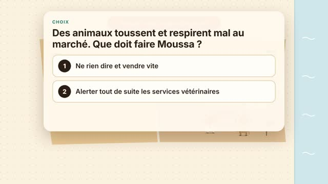 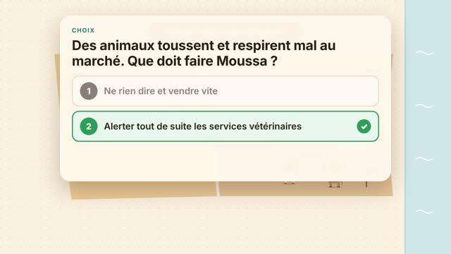 |
The map from the previous shot, still (market stall, two sick cattle with virus icons, the red pill and the question mark). A large cream card (rounded corners, soft shadow) slides down into the upper half at 0.2 s: small teal uppercase label "Choice", the question in large bold text, then two option rows with numbered dark circles 1 and 2 (texts below). Show "Pause the video and choose: 1 or 2?" with a 3, 2, 1 countdown in an orange ring, then option 2 turns green with a white check in a green circle and option 1 dims to half opacity (same timing as the first choice). | 3:47.9 Que doit faire Moussa ? 3:52.4 Réponse 2 : alerter tout de suite les services vétérinaires. |
Des animaux toussent et respirent mal au marché. Que doit faire Moussa ? 1. Ne rien dire et vendre vite 2. Alerter tout de suite les services vétérinaires Interaction 1 → mauvaise réponse, blocked3 2 → bonne réponse, alertGo |
| 19 | blocked3 10s Version interactive seulement |
 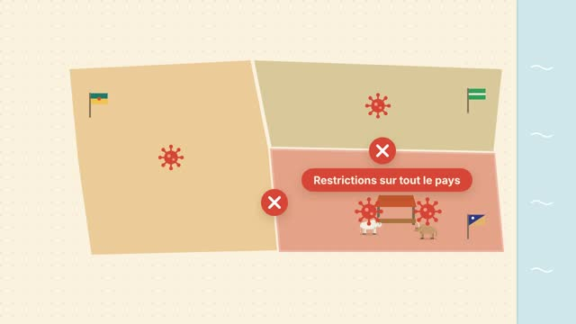 |
Branche : conséquence d’un mauvais choix, puis retour au choix. | +0.3s Sans alerte, la maladie passe de troupeau en troupeau. +4.6s Les pays voisins peuvent alors restreindre les animaux venant de tout le pays. |
— Interaction Branche : conséquence d’un mauvais choix, puis retour au choix. |
| 20 | alertGo 26s Version linéaire (WhatsApp) |
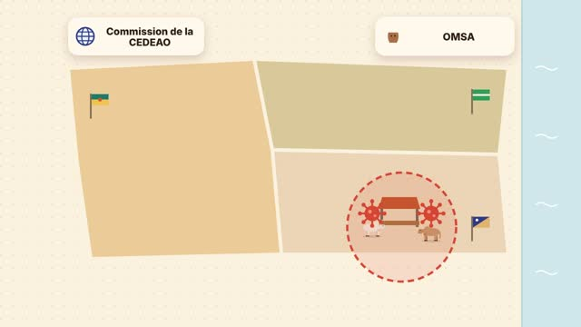 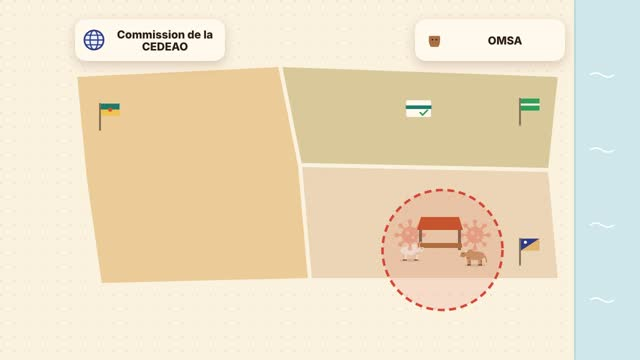 |
Continuing the market map. At 0.3 s a dashed red ring closes around the market with a red pill "Control area" at 0.8 s. At 7.2 s cream badges pop at the top: "ECOWAS Commission" (globe icon) at the left and "WOAH" (small cow head) at the right, with a teal pill "Alert network" between them; from 8 s four envelopes fly from the market to the two badges and to the other two countries. From 14.6 s a crate travels freely from the left country to the upper right one (only the ring around the market is restricted) and a green check pops at 21.8 s. At 20.6 s the virus icons fade, the ring fades and at 21.4 s a green pill "Disease eradicated" pops. | 3:58.9 Les autorités déclarent la maladie et appliquent des mesures dans un périmètre déterminé. 4:06.0 Le pays informe la Commission de la CEDEAO et les autres États par le réseau d’alerte, ainsi que l’OMSA. 4:13.0 Les restrictions peuvent ne viser que la partie du pays où la maladie est apparue, 4:19.4 et elles prennent fin une fois la maladie éradiquée. |
— |
| 21 | products 22s Version linéaire (WhatsApp) |
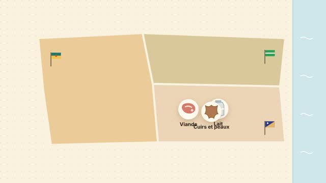 |
An invented map on a cream board (#FBF1DF) with a fine dot pattern, not a real map: three neighbouring countries drawn as soft angular shapes in sand tones separated by thick cream borders (a large one on the left, two on the right, one above the other), a pale-blue strip of sea with small white waves along the right edge, and a small plain two-colour flag on each country (invented, not any real flag). No country names. From 0.4 s three round cream icons pop on the left and glide into a row in the lower right country: a cut of meat "Meat", a milk jug "Milk", a folded hide "Hides and skins". At 7.8 s a cream pill with a document icon pops at the top, "Veterinary certificate", and green checks pop above the three products (8.6 s, 9.2 s, 9.8 s). From 14.4 s a small cargo ship rocks on the sea strip at the right, with a dark-blue pill "Export" at 15 s, and the hides icon arcs onto the ship. At 17.4 s and 18.4 s two pills stack at the upper right: "Certificate of origin" and "Disinfection certificate"; at 19.4 s a green check pops above the ship. | 4:24.9 Les produits d’origine animale voyagent aussi : viande, lait, cuirs et peaux. 4:32.0 Envoyés vers un autre État membre, ils sont aussi accompagnés d’un certificat vétérinaire délivré par un vétérinaire officiel. 4:39.0 À l’exportation, cuirs, peaux et cornes demandent un certificat d’origine et un certificat de désinfection. |
— |
| 22 | operators 24s Version linéaire (WhatsApp) |
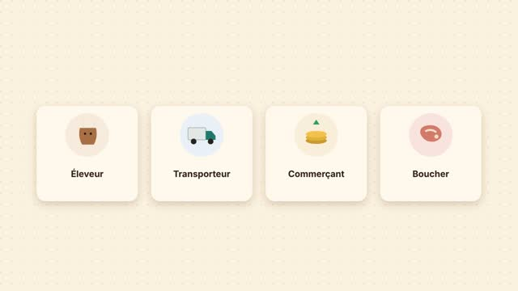 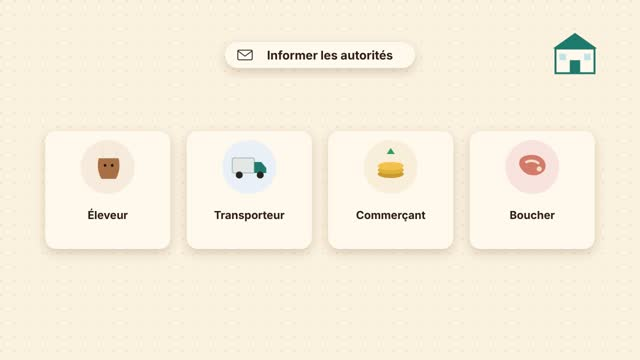 |
Cream board (#FBF1DF) with a fine dot pattern, no logos. Four cream cards (rounded corners, soft shadow, a pastel circle at the top holding an icon, a bold label under it) pop in a row at 0.6 s, 1.4 s, 2.2 s and 3.0 s: a cow head "Herder"; a small teal truck "Transporter"; a stack of gold coins "Trader"; a cut of meat "Butcher". At 8.0 s a green pill "Safe products" pops at the top (until 15 s). At 15.6 s it is replaced by a cream pill with an envelope icon, "Inform the authorities"; at 16.2 s a teal-roofed office building pops at the upper right and an envelope flies to it. | 4:46.9 Quiconque produit, transporte ou vend des animaux ou des aliments est un opérateur économique. 4:54.2 Les opérateurs du secteur alimentaire répondent de la qualité sanitaire de ce qu’ils vendent, et mettent sur le marché des produits sûrs. 5:01.8 Si un produit peut nuire à la santé, ils informent les autorités et agissent pour protéger les consommateurs. |
— |
| 23 | outreach 16s Version linéaire (WhatsApp) |
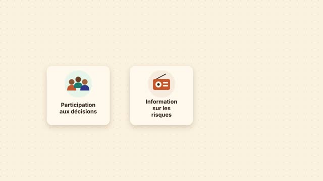 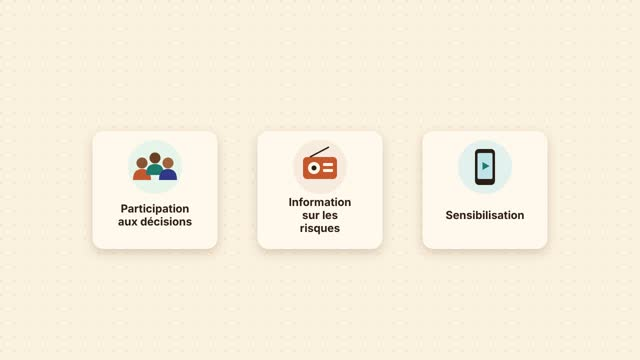 |
Cream board (#FBF1DF) with a fine dot pattern, no logos. Three cream cards (rounded corners, soft shadow, a pastel circle at the top holding an icon, a bold label under it) pop in a row at 0.6 s, 3.6 s and 8.0 s: three people side by side "A say in decisions"; a terracotta radio "Information on risks"; a phone with a play button "Awareness". | 5:10.9 Les pays associent aussi les acteurs aux décisions et les informent des risques sanitaires. 5:18.2 Les campagnes de sensibilisation, comme cette vidéo, aident chacun à détecter, prévenir et gérer les risques sanitaires. |
— |
| 24 | quiz 72s Version linéaire (WhatsApp) |
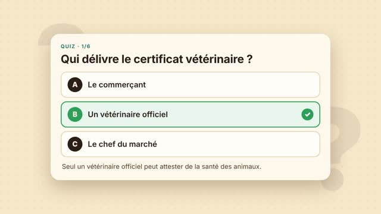 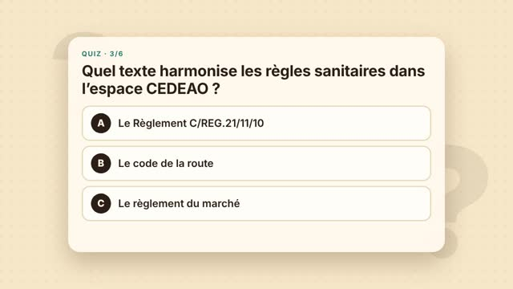 |
Warm cream background (#F7E7C9) with a dot pattern and two very large, faint, slowly rocking question marks. Six questions, 12 s each. Each fades in as a centred cream card: teal label "Quiz · 1/6" (2/6 and so on), the question in large bold text, and three option rows with dark lettered circles A, B, C. At 5.2 s into each question the correct option turns green with a white check, the others stay, and a one-line explanation appears under the options. Each card fades out in its last 0.3 s. | Qui délivre le certificat vétérinaire ? … Seul un vétérinaire officiel peut attester de la santé des animaux. Pourquoi contrôler les animaux aux frontières ? … Le contrôle protège les troupeaux, les consommateurs et les marchés. Quel texte harmonise les règles sanitaires dans l’espace CEDEAO ? … Il fixe les règles de santé animale, végétale et de sécurité des aliments. Un animal pourrait avoir une maladie à déclaration obligatoire. Que faire ? … Toute suspicion doit être portée immédiatement à l’autorité vétérinaire. Quel document aide les troupeaux transhumants ? … Les États membres adoptent ce certificat pour faciliter la transhumance. Qui répond de la sécurité des aliments mis en vente ? … Les opérateurs répondent de ce qu’ils vendent ; l’État contrôle. |
1. Qui délivre le certificat vétérinaire ? A. Le commerçant · B. Un vétérinaire officiel · C. Le chef du marché 2. Pourquoi contrôler les animaux aux frontières ? A. Pour empêcher la propagation des maladies · B. Pour ralentir le commerce · C. Pour compter les animaux 3. Quel texte harmonise les règles sanitaires dans l’espace CEDEAO ? A. Le Règlement C/REG.21/11/10 · B. Le code de la route · C. Le règlement du marché 4. Un animal pourrait avoir une maladie à déclaration obligatoire. Que faire ? A. Attendre de voir · B. Le signaler immédiatement à l’autorité vétérinaire · C. L’emmener sur un autre marché 5. Quel document aide les troupeaux transhumants ? A. Le certificat international de transhumance de la CEDEAO · B. Un reçu du marché · C. Aucun document 6. Qui répond de la sécurité des aliments mis en vente ? A. Personne · B. Seulement l’État · C. Les opérateurs qui les vendent Interaction 6 questions. Interactive : le spectateur répond, voit la correction et son score. Linéaire : la bonne réponse s’affiche après quelques secondes. |
| 25 | rules 10s Version linéaire (WhatsApp) |
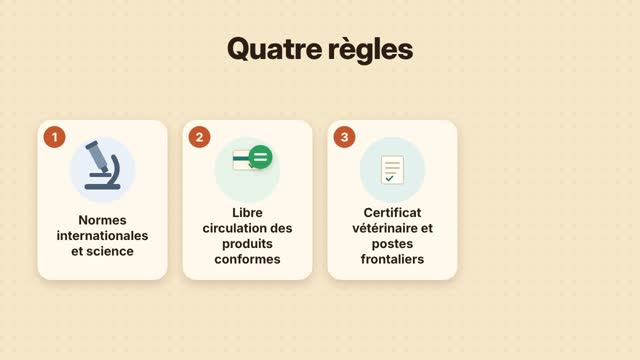 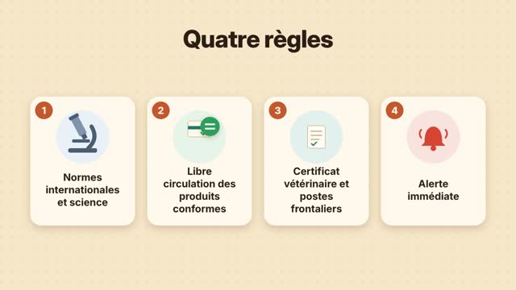 |
Warm cream background (#F7E7C9) with a dot pattern. The title "Four rules" fades in at the top. Four cream cards with soft shadows pop up in sequence (0.6 s, 1.4 s, 2.2 s, 3.0 s), each with a terracotta number badge (1 to 4), a pastel circle with an icon and a bold label: 1 a microscope "International standards and science"; 2 a crate with an equals sign "Free movement for compliant goods"; 3 a document "Veterinary certificate and border posts"; 4 a red bell "Alert at once". | 6:38.9 Quatre règles à retenir : science, libre circulation, certificat vétérinaire et alerte immédiate. | — |
| 26 | recap 9s Version linéaire (WhatsApp) |
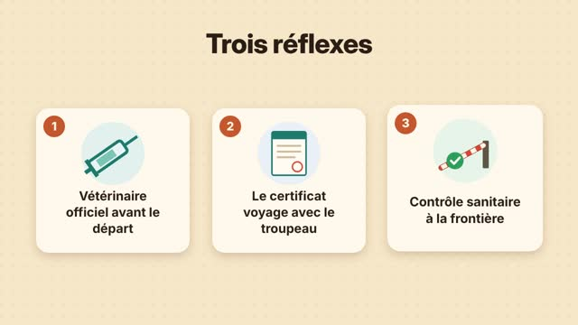 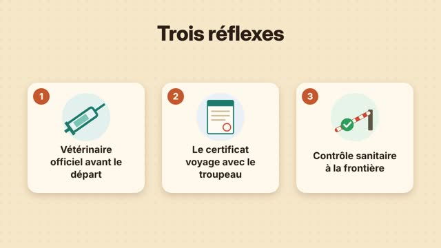 |
Same cream background. The title "Three habits" fades in at the top. Three cream cards with soft shadows pop up in sequence (0.6 s, 1.5 s, 2.4 s), each with a terracotta number badge (1, 2, 3), a pastel circle with an icon and a bold two- or three-line text: 1 a teal syringe, "Official veterinarian before leaving"; 2 a certificate with a teal header and red stamp, "The certificate travels with the herd"; 3 a raised striped barrier with a green check, "Health check at the border". | 6:48.9 Trois réflexes pour un commerce de bétail sûr et ouvert. | — |
| 27 | end 5s Version linéaire (WhatsApp) |
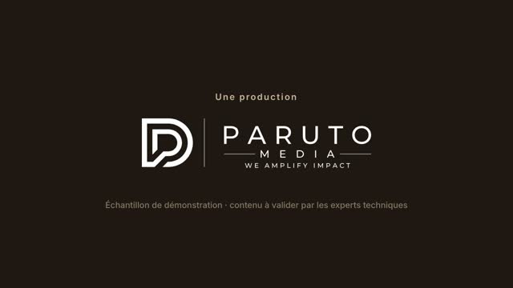  |
Dark brown background (#1E1712). Fade in, centred: small letter-spaced "Produced by" in muted beige, the Paruto Media logo in white below it (use the uploaded paruto-media-logo-white.svg; if no file is uploaded, set "PARUTO MEDIA" in white, wide letter-spacing), then a small grey line: "Demonstration sample · content to be validated by technical experts". | — | — |
Storyboard · Moussa’s Journey
Moussa’s Journey
Every shot of the module, interactive branches included: frames taken from the animation, visual direction, narration, on-screen text and interactions. Deliverable 1, to be validated with ARAA’s experts.
Branching map
| Shot | Segment | Frames | Visual direction | Narration and captions | On-screen text |
|---|---|---|---|---|---|
| 1 | title 7s Linear version (WhatsApp) |
 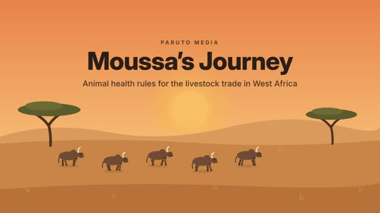 |
Dawn over the Sahel: sky gradient from #E7834A at the top to #F9D59C at the horizon, a large soft sun rising slowly, two flat acacia trees in dark olive silhouette, and five small dark-brown zebu cattle walking left to right along the horizon in a slow loop. From 0.8 s the title fades and slides up into the upper third: a small letter-spaced kicker "PARUTO MEDIA", the title "Moussa’s Journey" (very large, extra bold, #2B1E16) and the subtitle "Animal health rules for the livestock trade in West Africa" beneath it. | 0:01.2 Moussa’s journey: the animal health rules of the livestock trade. | — |
| 2 | meet 9.5s Linear version (WhatsApp) |
 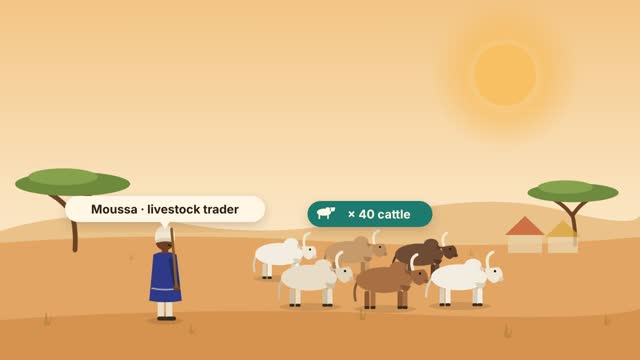 |
Daytime savanna: warm sky (#F2C584 to #FCEFD8), soft sand hills (#E9C189), ochre ground (#E2A564) with darker foreground (#D6934F), two green acacias and two small market stalls far right. Moussa walks in from the left and stops left of centre: a West African livestock trader in a long indigo boubou (#2E3A87), cream turban and a wooden staff. Six zebu cattle (white, tan and dark brown, with humps and lyre-shaped horns) walk in from the left in two rows and settle in the centre. At 3.6 s a cream speech-bubble name tag pops above Moussa: "Moussa · livestock trader". At 5.6 s a teal pill badge with a small cattle icon pops above the herd: "× 40 cattle". | 0:07.4 This is Moussa, a livestock trader in the Sahel. 0:11.5 He wants to sell 40 cattle at a big market across the border. |
— |
| 3 | diseases 9s Linear version (WhatsApp) |
 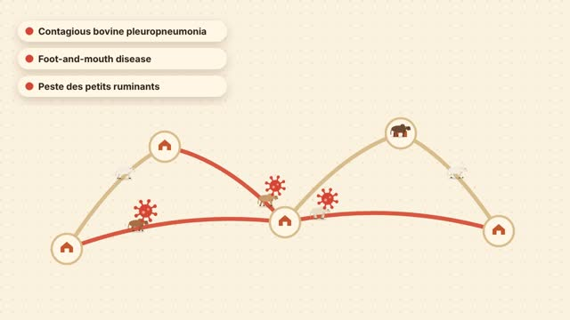 |
Abstract map board, not a real map: cream background (#FBF1DF) with a fine dot pattern. Five round town markers (cream circles with a small terracotta house icon) pop in, linked by six curved sand-coloured routes that draw on one after another. Tiny cattle walk along the routes continuously. From 3 s, red spiky virus icons appear riding with three of the animals and pulse; the routes those animals travel turn red as they go. From 4.6 s three cream pill labels with a red dot slide in at top left, one by one: "Contagious bovine pleuropneumonia", "Foot-and-mouth disease", "Peste des petits ruminants". No country borders, names or flags. | 0:16.8 Animals travel from country to country… and diseases travel with them. 0:20.9 One sick animal can infect other herds all along the route. |
— |
| 4 | why 22s Linear version (WhatsApp) |
 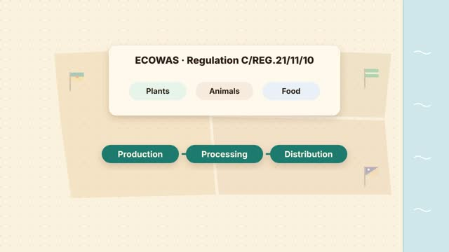 |
An invented map on a cream board (#FBF1DF) with a fine dot pattern, not a real map: three neighbouring countries drawn as soft angular shapes in sand tones separated by thick cream borders (a large one on the left, two on the right, one above the other), a pale-blue strip of sea with small white waves along the right edge, and a small plain two-colour flag on each country (invented, not any real flag). No country names. From 0.6 s, 1.4 s and 2.2 s three small cattle, each followed by a small cream crate, travel back and forth in arcs between the three countries. From 7.0 s the map dims and at 7.4 s a cream card pops in the upper middle with the title "ECOWAS · Regulation C/REG.21/11/10" and three pastel pills: "Plants", "Animals", "Food". From 14.8 s three teal pills pop in a row across the middle, joined by two teal arrows: "Production", "Processing", "Distribution". At 17.8 s a pale-red pill pops below them: "Human health ↔ animal health". | 0:25.8 Every day, animals and animal products cross the borders of West Africa. 0:32.9 In 2010, ECOWAS adopted a regulation that harmonises the health rules for plants, animals and food. 0:40.1 It applies from production to distribution, because human health depends on animal health. |
— |
| 5 | principles 26s Linear version (WhatsApp) |
Cream board (#FBF1DF) with a fine dot pattern, no logos. At 0.3 s a teal pill pops at the top: "ECOWAS · Regulation C/REG.21/11/10". Four cream cards (rounded corners, soft shadow, a pastel circle at the top holding an icon, a bold label under it) pop in a row at 0.6 s, 7.4 s, 13.8 s and 20.2 s: a small teal temple "International standards"; a microscope "Scientific data"; a green shield "Precaution"; a barrier crossed out "No more restriction than needed". | 0:47.8 The regulation sets common principles. First, measures are based on international standards. 0:54.7 Risks are assessed on scientific data, and measures stay proportionate to the risk. 1:01.1 A lack of full scientific certainty is no excuse to delay action. 1:07.5 But a provisional measure must not restrict trade more than necessary. |
— | |
| 6 | freeMove 22s Linear version (WhatsApp) |
An invented map on a cream board (#FBF1DF) with a fine dot pattern, not a real map: three neighbouring countries drawn as soft angular shapes in sand tones separated by thick cream borders (a large one on the left, two on the right, one above the other), a pale-blue strip of sea with small white waves along the right edge, and a small plain two-colour flag on each country (invented, not any real flag). No country names. At 1.2 s a green pill "Free movement" pops at the top. From 0.8 s a cream crate and a cow travel from the left country to the lower right one without stopping; at 6.0 s a green check pops above them. At 7.8 s a cream card pops in the middle with the left country's flag, a big equals sign and the lower right country's flag, with a pill "Mutual recognition" below it. At 14 s both fade, and from 14.6 s three pale-blue pills pop along the top one by one (1.6 s apart): "Transparency", "Impartiality", "Proportionality". | 1:13.8 Animals and products that meet community standards move freely across the ECOWAS area. 1:21.1 Each country accepts those that meet the standards of another member state. 1:27.9 And anyone inspected is entitled to transparency, impartiality and proportionality. |
— | |
| 7 | actors 28s Linear version (WhatsApp) |
Cream board (#FBF1DF) with a fine dot pattern, no logos. At 0.3 s a teal pill pops at the top: "ECOWAS · Regulation C/REG.21/11/10". Four cream cards (rounded corners, soft shadow, a pastel circle at the top holding an icon, a bold label under it) pop in a row at 0.6 s, 7.6 s, 14.8 s and 21.4 s: a small teal-roofed office building "Veterinary administration"; a veterinarian bust (white coat, teal cap) with a gold badge "Official veterinarian"; a veterinarian bust with a small document "Mandated private vet"; an indigo network of linked dots "Regional committee and networks". | 1:35.8 Who does what? Each country has a veterinary administration, which names the authority that issues veterinary certificates. 1:42.9 Official veterinarians carry out the health checks and certify the animals. 1:50.1 Private vets can receive a sanitary mandate: disease prevention, surveillance, inspection. 1:56.7 Across the region, a committee and networks of experts, laboratories and alerts link the countries. |
— | |
| 8 | choice1 9.3s (pause) Linear version (WhatsApp) |
 |
The savanna from the previous scene, herd and Moussa idle (the name tag and badge are gone). A large cream card (rounded corners, soft shadow) slides down into the upper half. Small teal uppercase label "Choice", the question in large bold text, then two option rows with numbered dark circles: 1 and 2 (texts below). From 1.4 s to 4.4 s show the line "Pause the video and choose: 1 or 2?" with a 3, 2, 1 countdown in an orange ring. At 4.6 s option 2 turns green with a white check mark in a green circle; option 1 dims to half opacity. | 2:03.8 Before leaving, what should Moussa do? 2:08.3 Answer 2: the health check starts before the journey. |
Before leaving, what should Moussa do? 1. Leave now and sort out the papers at the border 2. Have an official veterinarian examine and vaccinate the animals Interaction 1 → wrong, blocked1 2 → correct, vet |
| 9 | blocked1 9.4s Interactive version only |
Branch: the consequence of a wrong choice, then back to the choice. | +0.3s Without a veterinary certificate, the herd is stopped at the border. +4.2s Checks, waiting, the herd held back: Moussa loses time and money. |
— Interaction Branch: the consequence of a wrong choice, then back to the choice. |
|
| 10 | vet 16.6s Linear version (WhatsApp) |
 |
Same savanna, five cattle standing still, Moussa on the left. The official veterinarian walks in from the left: white coat, teal cap, teal trousers, stethoscope, clipboard. He stops in front of each front cow in turn (about 2.0 s, 3.6 s, 5.2 s), arm raised as if examining, and a green circle with a white check pops above each cow (2.4 s, 4.0 s, 5.6 s). At 3.0 s a pale-teal pill with a syringe icon pops: "Vaccinated". At 6.0 s a certificate card bounces in at upper right: cream paper, teal header reading "VETERINARY CERTIFICATE", grey text lines drawing on one by one, three small dots and "× 40", then at 7.3 s a red round stamp with a check slams on (scale from big to normal, tilted), and at 7.7 s a blue handwritten signature draws on. At 10.4 s the certificate shrinks and flies into Moussa's hand. | 2:13.1 Moussa calls the official veterinarian, who examines and vaccinates each animal. 2:18.4 The animals are healthy: the official veterinarian issues the veterinary certificate. 2:24.2 It goes with the herd and is shown at the veterinary posts on the route. |
— |
| 11 | borderArrive 6s Linear version (WhatsApp) |
 |
A border post on a dusty road: on the right a small cream building with a terracotta roof and a window, a teal sign on the roof reading "BORDER", a flagpole with a plain teal-and-yellow flag (not any real country's flag), and a red-and-white striped barrier arm lowered across the road from a dark post. A veterinary border officer in a khaki uniform and peaked cap stands to the right of the barrier, facing left. Moussa and the herd walk in from the left and stop in front of the barrier. | 2:29.7 At the border, a veterinary officer checks the documents and the animals. | — |
| 12 | choice2 8s (pause) Interactive version only |
Choice card over the frozen scene; the video waits for the viewer’s answer. | +0.3s The officer asks for the documents. What does Moussa show? | The officer asks for the documents. What does Moussa show? 1. The market sales receipt 2. The veterinary certificate Interaction 1 → wrong, blocked2 2 → correct, borderCross |
|
| 13 | blocked2 7.5s Interactive version only |
 |
Branch: the consequence of a wrong choice, then back to the choice. | +0.3s A sales receipt does not prove the animals are healthy. +3.9s Without a certificate, the herd cannot cross. |
— Interaction Branch: the consequence of a wrong choice, then back to the choice. |
| 14 | borderCross 12.2s Linear version (WhatsApp) |
Continuing the border scene. At 0.1 s the certificate (same design, now with the red stamp and signature) pops up between Moussa and the officer; Moussa holds his arm out to hand it over. From 0.7 s to 1.9 s a magnifying glass sweeps across it. At 2.0 s a green rectangular stamp "VALID" slams onto the certificate, then the certificate fades. From 2.6 s to 3.6 s the barrier arm swings up. From 3.4 s Moussa and the herd walk through and out of frame to the right while the officer waves. | 2:35.6 The certificate is valid and the animals are healthy: the barrier lifts. 2:41.2 ECOWAS harmonised rules give health checks a common framework across the region. |
— | |
| 15 | borderRules 20s Linear version (WhatsApp) |
An invented map on a cream board (#FBF1DF) with a fine dot pattern, not a real map: three neighbouring countries drawn as soft angular shapes in sand tones separated by thick cream borders (a large one on the left, two on the right, one above the other), a pale-blue strip of sea with small white waves along the right edge, and a small plain two-colour flag on each country (invented, not any real flag). No country names. From 0.6 s three small border posts (cream huts with teal roofs and red barrier arms) appear along the border between the left country and the lower right one, and a teal pill "Border posts" pops at the top. From 1.6 s three cattle walk from the left to the middle post. At 7.0 s red spiky virus icons pop above them and the top pill changes to a red pill "Notifiable disease"; at 7.8 s a red X pops at the post. At 8.8 s a dashed brown pen appears just inside the lower right country and from 9.0 s the cattle walk into it; at 10.4 s a pill "Quarantine" pops beside it. From 13.8 s an envelope flies from the pen back to the left country, and at 14.8 s a pill "Reasons given" pops at the top. | 2:47.9 Each country lists the border posts where animals may enter. 2:54.4 If animals carry a notifiable disease, it can refuse them entry or put them in quarantine. 3:01.0 Such measures are reported straight away, with the reasons. |
— | |
| 16 | transhumance 22s Linear version (WhatsApp) |
An invented map on a cream board (#FBF1DF) with a fine dot pattern, not a real map: three neighbouring countries drawn as soft angular shapes in sand tones separated by thick cream borders (a large one on the left, two on the right, one above the other), a pale-blue strip of sea with small white waves along the right edge, and a small plain two-colour flag on each country (invented, not any real flag). No country names. The countries are tinted for the seasons: the left one dry gold, the two on the right fresh green. The three border posts are shown. From 0.8 s Moussa (small, indigo boubou, staff) walks three cattle in a long arc from the top of the left country down into the lower right country, past the middle post (a green check pops at the post at 9.6 s). Pills: "Dry season" at the upper left from 0.8 s to 7 s, then "Rainy season" on the right from 7 s to 14 s. At 14.8 s a cream card with a document icon pops at the upper right: "International transhumance certificate". | 3:07.9 Transhumance moves herds with the seasons. It is a useful way of raising livestock, but also a source of health problems. 3:15.0 Member states make it easier for transhumant herds to move from country to country, 3:22.2 with the ECOWAS international transhumance certificate. |
— | |
| 17 | alert 18s Linear version (WhatsApp) |
An invented map on a cream board (#FBF1DF) with a fine dot pattern, not a real map: three neighbouring countries drawn as soft angular shapes in sand tones separated by thick cream borders (a large one on the left, two on the right, one above the other), a pale-blue strip of sea with small white waves along the right edge, and a small plain two-colour flag on each country (invented, not any real flag). No country names. A small market stall (terracotta awning) stands in the lower right country, with a pill "Market" above it at 0.6 s. Two cattle stand by the stall; at 2.2 s and 2.6 s red spiky virus icons pop above them. At 7.4 s a red pill "Notifiable disease" pops at the top, and at 8.2 s a large question-mark bubble pops beside the stall. | 3:29.9 At the market, Moussa notices animals from another herd coughing and short of breath. 3:36.8 It could be a notifiable disease: any suspicion must be reported to the veterinary authority at once. |
— | |
| 18 | choice3 11s (pause) Linear version (WhatsApp) |
The map from the previous shot, still (market stall, two sick cattle with virus icons, the red pill and the question mark). A large cream card (rounded corners, soft shadow) slides down into the upper half at 0.2 s: small teal uppercase label "Choice", the question in large bold text, then two option rows with numbered dark circles 1 and 2 (texts below). Show "Pause the video and choose: 1 or 2?" with a 3, 2, 1 countdown in an orange ring, then option 2 turns green with a white check in a green circle and option 1 dims to half opacity (same timing as the first choice). | 3:47.9 What should Moussa do? 3:52.4 Answer 2: alert the veterinary services straight away. |
Animals at the market are coughing and short of breath. What should Moussa do? 1. Say nothing and sell quickly 2. Alert the veterinary services straight away Interaction 1 → wrong, blocked3 2 → correct, alertGo |
|
| 19 | blocked3 10s Interactive version only |
Branch: the consequence of a wrong choice, then back to the choice. | +0.3s With no alert, the disease spreads from herd to herd. +4.6s Neighbouring countries can then restrict animals from the whole country. |
— Interaction Branch: the consequence of a wrong choice, then back to the choice. |
|
| 20 | alertGo 26s Linear version (WhatsApp) |
Continuing the market map. At 0.3 s a dashed red ring closes around the market with a red pill "Control area" at 0.8 s. At 7.2 s cream badges pop at the top: "ECOWAS Commission" (globe icon) at the left and "WOAH" (small cow head) at the right, with a teal pill "Alert network" between them; from 8 s four envelopes fly from the market to the two badges and to the other two countries. From 14.6 s a crate travels freely from the left country to the upper right one (only the ring around the market is restricted) and a green check pops at 21.8 s. At 20.6 s the virus icons fade, the ring fades and at 21.4 s a green pill "Disease eradicated" pops. | 3:58.9 The authorities declare the disease and apply measures within a defined area. 4:06.0 The country informs the ECOWAS Commission and the other states through the alert network, and WOAH too. 4:13.0 Restrictions can target only the part of the country where the disease appeared, 4:19.4 and they end once the disease is eradicated. |
— | |
| 21 | products 22s Linear version (WhatsApp) |
An invented map on a cream board (#FBF1DF) with a fine dot pattern, not a real map: three neighbouring countries drawn as soft angular shapes in sand tones separated by thick cream borders (a large one on the left, two on the right, one above the other), a pale-blue strip of sea with small white waves along the right edge, and a small plain two-colour flag on each country (invented, not any real flag). No country names. From 0.4 s three round cream icons pop on the left and glide into a row in the lower right country: a cut of meat "Meat", a milk jug "Milk", a folded hide "Hides and skins". At 7.8 s a cream pill with a document icon pops at the top, "Veterinary certificate", and green checks pop above the three products (8.6 s, 9.2 s, 9.8 s). From 14.4 s a small cargo ship rocks on the sea strip at the right, with a dark-blue pill "Export" at 15 s, and the hides icon arcs onto the ship. At 17.4 s and 18.4 s two pills stack at the upper right: "Certificate of origin" and "Disinfection certificate"; at 19.4 s a green check pops above the ship. | 4:24.9 Products of animal origin travel too: meat, milk, hides and skins. 4:32.0 Sent to another member state, they too travel with a veterinary certificate from an official veterinarian. 4:39.0 For export, hides, skins and horns need a certificate of origin and a disinfection certificate. |
— | |
| 22 | operators 24s Linear version (WhatsApp) |
Cream board (#FBF1DF) with a fine dot pattern, no logos. Four cream cards (rounded corners, soft shadow, a pastel circle at the top holding an icon, a bold label under it) pop in a row at 0.6 s, 1.4 s, 2.2 s and 3.0 s: a cow head "Herder"; a small teal truck "Transporter"; a stack of gold coins "Trader"; a cut of meat "Butcher". At 8.0 s a green pill "Safe products" pops at the top (until 15 s). At 15.6 s it is replaced by a cream pill with an envelope icon, "Inform the authorities"; at 16.2 s a teal-roofed office building pops at the upper right and an envelope flies to it. | 4:46.9 Anyone who produces, transports or sells animals or food is an economic operator. 4:54.2 Food operators answer for the safety of what they sell, and place only safe products on the market. 5:01.8 If a product may harm health, they inform the authorities and act to protect consumers. |
— | |
| 23 | outreach 16s Linear version (WhatsApp) |
Cream board (#FBF1DF) with a fine dot pattern, no logos. Three cream cards (rounded corners, soft shadow, a pastel circle at the top holding an icon, a bold label under it) pop in a row at 0.6 s, 3.6 s and 8.0 s: three people side by side "A say in decisions"; a terracotta radio "Information on risks"; a phone with a play button "Awareness". | 5:10.9 Countries also give stakeholders a say in decisions and keep them informed about health risks. 5:18.2 Awareness campaigns, like this video, help everyone detect, prevent and manage health risks. |
— | |
| 24 | quiz 72s Linear version (WhatsApp) |
Warm cream background (#F7E7C9) with a dot pattern and two very large, faint, slowly rocking question marks. Six questions, 12 s each. Each fades in as a centred cream card: teal label "Quiz · 1/6" (2/6 and so on), the question in large bold text, and three option rows with dark lettered circles A, B, C. At 5.2 s into each question the correct option turns green with a white check, the others stay, and a one-line explanation appears under the options. Each card fades out in its last 0.3 s. | Who issues the veterinary certificate? … Only an official veterinarian can attest to the animals’ health. Why are animals checked at borders? … Checks protect herds, consumers and markets. Which text harmonises health rules in the ECOWAS area? … It sets the rules for animal health, plant health and food safety. An animal may have a notifiable disease. What now? … Any suspicion must go to the veterinary authority at once. Which document helps transhumant herds? … Member states adopt this certificate to ease transhumance. Who answers for the safety of food on sale? … Operators answer for what they sell; the State checks. |
1. Who issues the veterinary certificate? A. The trader · B. An official veterinarian · C. The market chief 2. Why are animals checked at borders? A. To stop diseases from spreading · B. To slow trade down · C. To count the animals 3. Which text harmonises health rules in the ECOWAS area? A. Regulation C/REG.21/11/10 · B. The highway code · C. The market by-laws 4. An animal may have a notifiable disease. What now? A. Wait and see · B. Report it to the veterinary authority at once · C. Take it to another market 5. Which document helps transhumant herds? A. The ECOWAS international transhumance certificate · B. A market receipt · C. No document at all 6. Who answers for the safety of food on sale? A. Nobody · B. Only the State · C. The operators who sell it Interaction 6 questions. Interactive: the viewer answers, sees the correction and a score. Linear: the right answer is revealed after a few seconds. |
|
| 25 | rules 10s Linear version (WhatsApp) |
Warm cream background (#F7E7C9) with a dot pattern. The title "Four rules" fades in at the top. Four cream cards with soft shadows pop up in sequence (0.6 s, 1.4 s, 2.2 s, 3.0 s), each with a terracotta number badge (1 to 4), a pastel circle with an icon and a bold label: 1 a microscope "International standards and science"; 2 a crate with an equals sign "Free movement for compliant goods"; 3 a document "Veterinary certificate and border posts"; 4 a red bell "Alert at once". | 6:38.9 Four rules to remember: science, free movement, the veterinary certificate and an immediate alert. | — | |
| 26 | recap 9s Linear version (WhatsApp) |
 |
Same cream background. The title "Three habits" fades in at the top. Three cream cards with soft shadows pop up in sequence (0.6 s, 1.5 s, 2.4 s), each with a terracotta number badge (1, 2, 3), a pastel circle with an icon and a bold two- or three-line text: 1 a teal syringe, "Official veterinarian before leaving"; 2 a certificate with a teal header and red stamp, "The certificate travels with the herd"; 3 a raised striped barrier with a green check, "Health check at the border". | 6:48.9 Three habits for a safe and open livestock trade. | — |
| 27 | end 5s Linear version (WhatsApp) |
  |
Dark brown background (#1E1712). Fade in, centred: small letter-spaced "Produced by" in muted beige, the Paruto Media logo in white below it (use the uploaded paruto-media-logo-white.svg; if no file is uploaded, set "PARUTO MEDIA" in white, wide letter-spacing), then a small grey line: "Demonstration sample · content to be validated by technical experts". | — | — |